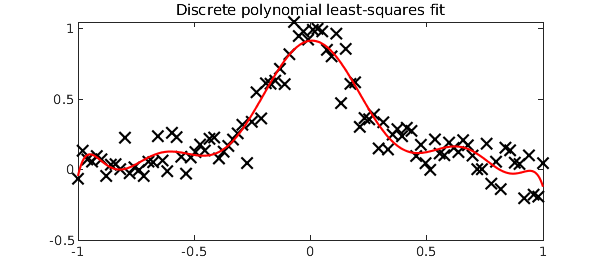

In Matlab, a standard command for least-squares fitting by a polynomial to a set of discrete data points is POLYFIT. The polynomial returned by POLYFIT is represented in Matlab's usual manner by a vector of coefficients in the monomial basis.
In Chebfun, there is an overloaded POLYFIT command in the domain class that does the same thing, except that the polynomial is returned as a chebfun rather than a coefficient vector. Here is an example:
npts = 100;
x = linspace(-1,1,npts);
y = 1./(1+25*x.^2) + 1e-1*randn(1,npts);
f = polyfit(x,y,10,domain(-1,1));
plot(x,y,'xk','markersize',12)
hold on, plot(f,'r','linewidth',2)
title('Discrete polynomial least-squares fit','fontsize',16)

Chebfun also has a POLYFIT command in the chebfun class, and this is for continuous rather than discrete polynomial least-squares fitting. For example, here is a least-squares fit to a jagged function:
f = chebfun('abs(x+.2)-.5*sign(x-.5) ','splitting','on');
r = polyfit(f,10);
hold off, plot(f,'k',r,'r','linewidth',2)
title('Continuous polynomial least-squares fit','fontsize',16)